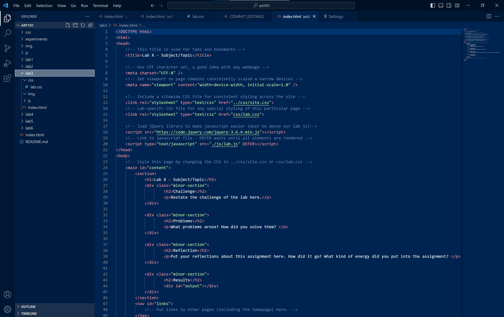
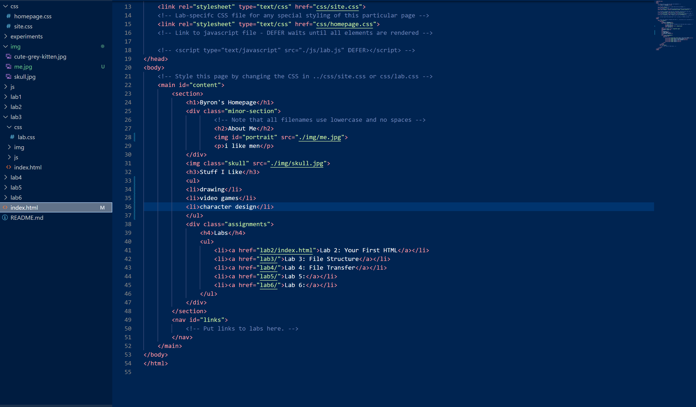
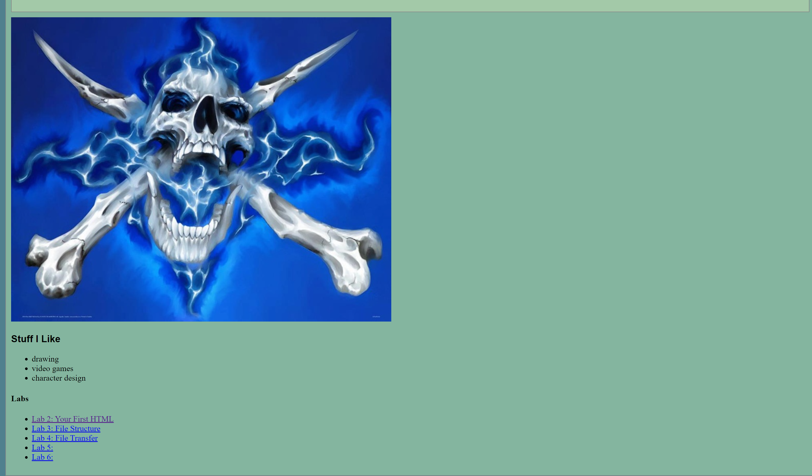
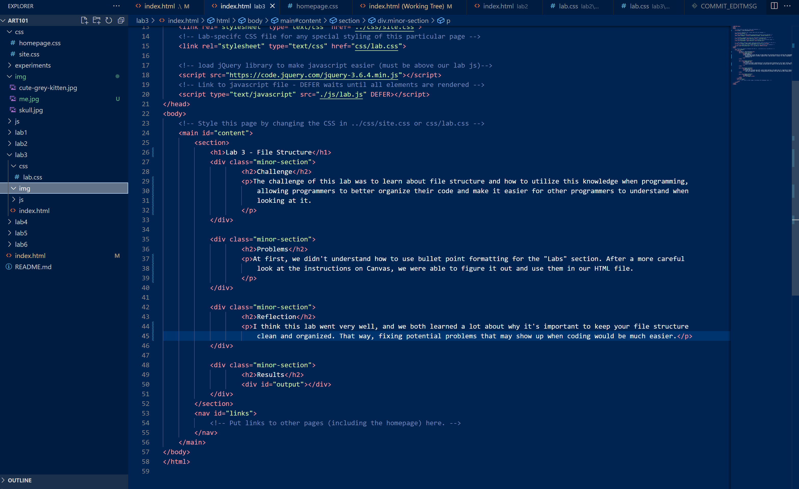
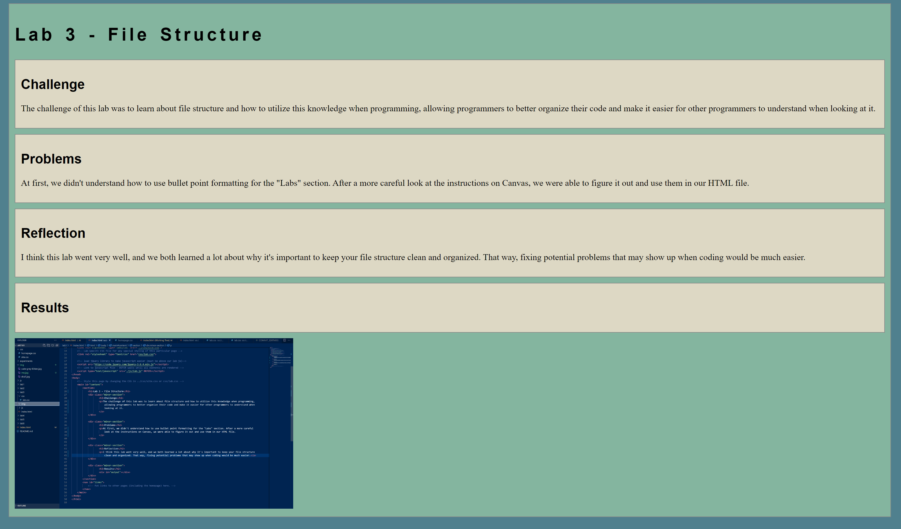

Lab 3 - File Structure
Challenge
The challenge of this lab was to learn about file structure and how to utilize this knowledge when programming, allowing programmers to better organize their code and make it easier for other programmers to understand when looking at it.
Problems
At first, we didn't understand how to use bullet point formatting for the "Labs" section. After a more careful look at the instructions on Canvas, we were able to figure it out and use them in our HTML file.
Reflection
I think this lab went very well, and we both learned a lot about why it's important to keep your file structure clean and organized. That way, fixing potential problems that may show up when coding would be much easier.
Results
Screenshot 1: Project File Structure

Screenshot 2 and 2.5: HTML


Screenshot 3: Lab 3 HTML

Screenshot 4: Lab 3 in Browser
